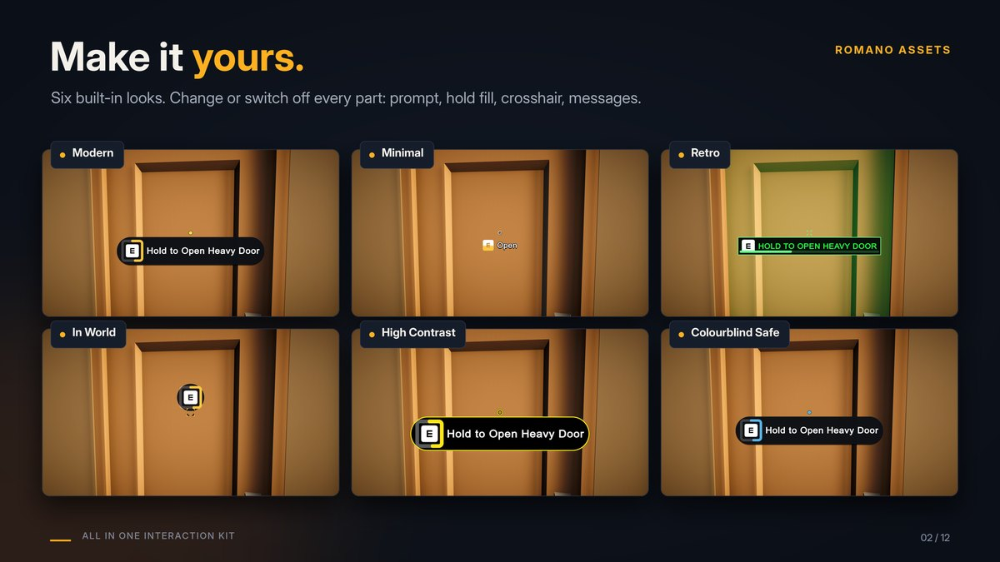

Customizing: make it yours
Your game shouldn't look like everyone else's. Everything the player sees can be changed or switched off: the prompt, how holding shows its progress, the "can't use" look, the crosshair, the panels, the sounds and the words. Start from one of six ready-made themes, change anything, give single objects their own look, or draw it all with your own UI while the kit does the work. Nothing here needs code unless it says so.

Make it yours in a minute #
- Assets > Create > All In One Interaction Kit > Theme (Modern / Minimal / Retro / In World / High Contrast / Colourblind Safe) makes a theme asset from a ready-made look. Its inspector has the presets at the top, then the Prompt style, Crosshair style and Highlight style in foldouts.
- Add an Interaction Theme component to your first scene (Add Component > All In One Interaction Kit > UI) and drop your theme in. Every prompt and crosshair uses it. (No asset yet? Pick a Preset on the component.)
- Change anything in the theme while the game runs: the prompt and crosshair follow at once.
- One object should look different? Add an Interaction Appearance to it: its own theme, its own icon, or no prompt, crosshair or highlight at all.
Let players switch looks from your options menu: call NextPreset(), UsePreset(1) or Use(theme) on the Interaction
Theme component, or set InteractionTheme.Current. The 3D demo's Make it yours button cycles the presets, and
Tab opens a small Make it yours panel that changes the theme, what the prompt shows, how holding fills up, how
messages show, where the prompt sits and the sizes of the prompt, icons, hold fill and crosshair, live (keys 1 to 9).
The quickest way in: the Quick setup at the top of a Prompt Style or Theme inspector has the five choices most people change, Prompt shows, Hold fills, Ring shape, Messages show as, Prompt position and four size sliders (Prompt size, Message icon size, Hold fill size, Crosshair size, 0.5x to 2x), with a live preview (pressing, holding on a keyboard and a gamepad, a red-key lock and "no power", and a small screen showing where the prompt sits).
| Preset | Prompt | Hold progress | Crosshair |
|---|---|---|---|
| Modern | Dark rounded pill, soft shadow, grows in; a red lock and "Locked" for the red-key door | A ring round the button | A dot that grows and lights up |
| Minimal | No panel, short text ("E Open"), fades; just a coloured lock | The button fills up | A thin ring, only when there's something to use |
| Retro | Square terminal panel in phosphor green, capitals, slides up | A bar that fills in steps | A cross that turns 45 degrees |
| In World | Just the button in a small round badge, on the object, pops in; a lock in the key's colour | A ring around the button | Brackets around what you look at |
| High Contrast | Big bold white text on solid black, thick yellow outline | A thick yellow ring | A large white ring |
| Colourblind Safe | Modern, in blue and orange | A blue ring | Blue when usable, orange when not |
| theme also has a Highlight style for the Interaction Highlighter: Modern an amber outline, a soft white rim, Retro a pulsing green tint, In World a white outline, High Contrast a thick yellow outline, Safe a blue outline (orange when it can't be used). |
Your own objects #
- Any model or prefab: the Setup Wizard makes an interactive copy of it (doors, lids and drawers found by name, or one object as a door, switch, button, lever, plate, crate, carryable, inspectable, note, keypad or item socket). Your original is never changed. Or add an Interactable and a behaviour (Hinge, Slide, Switch...) to any GameObject yourself.
- Doors and drawers: open angle, hinge side and hinge point, axis, smooth (Tween: duration and easing curve) or physics motion (spring, damper, swing damping, max spin speed, free swing when idle), how far a drawer slides, in which direction and how fast, start open, and whether it blocks while moving. The Hinge inspector previews the angle and has a Scene view handle.
- Words in the prompt: each object's Display Name, its Open Verb / Close Verb (or Verb), or a whole Prompt Override.
- Rules: Max Distance, Priority, Press or Hold (with Hold Duration), Cooldown and Max Concurrent Users on the Interactable; locks (Lock: key and message), power (Needs Power: message) and your own rules in code (Extending).
Your player and input #
- Your own controller: the kit never moves the player. Put an Interactor on it; while a note, keypad or inspected
object is open,
Interactor.IsBusyis true so you can pause your own controls. - Finding things: Look Ray Discovery (distance, radius, Layers, triggers), Proximity Discovery and Proximity 2D Discovery (radius, Layers, facing). Only the layers you tick count.
- Buttons: Key Interaction Input: the keyboard key and the gamepad button. With the Input System package, Input Action Interaction Input uses any Input Action, so players can rebind it. Carry: Throw Key and Throw Button. Notes, keypads and inspect: Close Key (the gamepad's back button always closes too). The debugger: Toggle Key.
The prompt #
Every setting is on the Prompt Style (in a theme, or as its own asset on a prompt). See Prompts.
- What it shows: Prompt shows: Full ("E Open Heavy Door"), Short (just the verb, "E Open"), Key Only, Text Only, or None (no prompt; the crosshair and the events still work). In the style these are Content and Action Text; one object can choose its own (Interaction Appearance > Action Text). Icon Position: left, right or above the text. Spacing, Padding, Text Case (as written, CAPITALS, lower case).
- Panel: on or off, Roundness (square to fully round), Outline Width and colour, a Shadow (colour and offset), an Accent Bar, and every colour.
- Show and hide: None, Fade, Scale (grows from Scale From) or Slide (rises by Slide Distance), over Fade Time, shaped by an Easing curve (overshoot it for a pop).
- Hold progress: Ring round the button (its Ring Shape follows the button: a rounded square round keys, a circle round gamepad buttons; or always one of them; Ring Gap), Bar (a thin underline inside the prompt), Key Fill (the key's face fills with colour, its letter stays sharp), Pie (a clock face behind the button), Panel Fill, None, or Custom Sprite (your own sprite, filled horizontally, vertically or radially). Thickness, Track Color, Hold Color (a gradient: colour changes as it fills), Start Angle, Clockwise, a Fill Curve (fast at first, in steps...), and what happens when the button is let go: Drain (over Drain Time) or Reset.
- Messages (locked, needs an item, no power, wait, used up, in use, too far, hands full, anything else): each can show as Full Text ("Locked - find the red key"), Short Text ("Locked"), Icon Only (a clean lock), Context Icon (the icon in the colour of what it needs: a red lock for the red key), Icon And Short Text, or None. Messages show as sets them all; Message Rules give one kind its own display, short text or icon; an object can choose its own (Interaction Appearance > Message Display). Show Waiting Messages also shows "wait", "done" and "too far" (otherwise the prompt just hides then). Text and panel colours, Message Icon Color, and Show Unavailable Text on or off.
- Icons: the kit draws its own crisp icons (lock, key, power, clock, hand, check, cross, backpack) at 256 px, so they work in every pipeline with nothing to import. Swap any of them in a Message Rule, or a lock's or socket's own Icon. Key colours: a key named after a colour ("red", "blue key") colours its locks by itself; or tick Use Key Color on the Key Pickup or the Lock (and Use Item Color on an Item Socket) and pick any colour.
- Prompt position: Under Crosshair (a small even gap below it, Beside Gap), Replace Crosshair (in the middle; the crosshair hides while something is in focus), Over Crosshair (the button sits exactly on the crosshair, with the words beside it; the crosshair hides under it while something is in focus), Beside Crosshair right or left, Bottom Centre, Top Centre, On Object (follows it, kept on screen; when you look right at it, it lines up over the crosshair: On Object Align To Aim, On Object Max Above), or Custom (Custom Anchor, Custom Pivot, Custom Offset in percent of the screen). It glides to a new spot over Position Blend Time. One object can choose its own (Interaction Appearance > Position). Lists of more actions follow the prompt. Use Placement keeps the older Placement and Vertical Position settings.
- Crisp and centred: every part snaps to whole pixels; the ring is always concentric with its button, and the icon and text share a centre line, at any resolution, aspect and UI scale.
- Button icons: your own Glyph Set per device (keyboard, Xbox, PlayStation, Switch), on the prompt or in a theme. The kit ships Kenney's icons.
- Words: Hold Format on the prompt ("Hold to {0}"), and the translation hook below.
- Your own prompt UI: Interaction Prompt (Custom) drives your own prefab: put Interaction Prompt Events on it
and wire its events (text, icon, key label, hold progress, visible, alpha, hold mode, can't use) to your Text, Image and
Animator with no code, or implement
IInteractionPromptDisplay. The kit still decides the text, the icon for the player's device, the hold progress and the locked state. Every prompt also has On Shown, On Hidden, On Hold Progress and On Text Changed events. The uGUI prompt uses TextMesh Pro with your font.
The crosshair #
Every setting is on the Crosshair Style (in a theme, or on the crosshair).
- Shape: Dot, Ring, Cross, Brackets, Chevron, your own Sprite, or None; Size, Thickness, Gap, an Outline so it reads on any background, or Show off to hide it.
- A look per state: Idle (looking at nothing usable), Hover (something to use), Blocked (locked, no power) and Holding: each with its own colour, size, turn, pulse, and whether it shows at all (hide it until there's something to use).
- Changing between looks: Transition Time and an Easing curve.
- Hold progress on the crosshair: a ring round it, with its own size, thickness and colours.
- Your own crosshair UI: turn Draw off and use On State Changed and On Hold Progress.
- Per object: an Interaction Appearance with Show Crosshair off keeps the crosshair idle for that object, or gives it its own theme.
Notes, keypads and inspect #
- Look: notes: Paper Color, Ink Color, Font. Keypads: Panel, Display, Digit, Wrong and Highlight colours, Font. Inspect: Text Color, Font, View Distance, View Rotation.
- Text: notes: Title, Pages, Pages Footer ("Page {0} of {1} ..."), Footer. Keypads: Wrong Code Text, Hint Text, Show Digits. Inspect: Title, Description, Hint Text. An empty hint or footer hides it.
- Your own UI: untick Draw Panel (notes, keypads) or Draw Text (inspect) and the kit draws nothing. Show your
own UI from the On Opened / On Closed events (inspect: On Inspect Started / Ended). Your keypad's buttons
call
PressKey("1")...PressKey("OK")(orSubmitCode("1234")); your note UI readsTitle,PagesandPageand callsTurnPage(1)andClose(...). The kit still handles the code check, the lockout, multiplayer and freezing the player.
Sounds #
Add Interaction Sounds (Add Component > All In One Interaction Kit > Feedback) to an interactable object and drop your AudioClips in:
- Opened / Closed: when it opens or turns on, and closes or turns off (doors, drawers, lids, switches, levers, buttons). Every player hears it in multiplayer.
- Used: each successful use. Denied: it can't be used (locked, no power, too heavy).
- Keypad: Key Pressed, Code Accepted, Wrong Code. Carry: Picked Up, Dropped, Thrown. Loot: Looted (once per opening).
- Source (empty = a 3D Audio Source is added), Volume, Pitch Variation.
Anything else can play a sound from a UnityEvent: every part has events (below), and an event can call
AudioSource.PlayOneShot with your clip.
Events, for sounds, effects and your own scripts #
Every object has events in the Inspector (no code) and as C# events:
- Interactable: On Interacted, On Denied, On Hold Started, On Hold Canceled, On State Changed.
- Power: every source (switch, plate, gate, puzzle, keypad, socket) has On Powered / On Unpowered; Power Receiver too; Sequence Puzzle: On Progress, On Solved, On Failed.
- Carry: On Picked Up, On Dropped, On Thrown. Item Socket: On Filled, On Emptied. Keypad: On Unlocked, On Wrong Code, On Locked, On Opened, On Closed, On Key Pressed. Note: On Opened, On Closed. Inspect: On Inspect Started / Ended. Loot Container: On Item Given, On Emptied. Key Ring: Changed (C# event).
Your language #
Every text the kit shows players (prompts, reasons such as "Locked", and the note, keypad and inspect text) goes through one hook. Point it at your localization system once, for example in a startup script:
InteractionText.Translate = text => MyLocalization.Get(text); // return null to keep a text as written
What it receives: the whole prompt as shown ("Open Door", "Close Chest"), each reason as written ("Locked - find the red key", "Too heavy"), and your own panel words (note titles and pages, inspect titles and descriptions, the panel hints and footers). So your own texts can simply be keys into your translation table.
Loot and inventory #
- Your items: Loot Item assets (id, display name, icon, key id) and Loot Table assets (always-included items, weighted random rolls, count ranges). Chests use them through Loot Container (fixed items, a table, a seed, block when empty).
- Your inventory: put a component that implements
ILootReceiveron the player (Containers and loot). The sample inventory and its "+ 7 Coin" messages are only an example.
Left as they are, on purpose #
- The F3 debugger's look: a development aid, not for players (its key and whether it starts visible are settings).
- Power wire colours in the Scene view: editor-only (cyan while editing, yellow when powered, grey when off); they never appear in your game. Turn them off with Tools > All In One Interaction Kit > Show Power Wires.
- The built-in panels' layout (where the keys and the paper sit): change the colours, font and text, or untick Draw Panel and use your own UI.